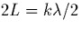
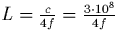
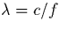

Next: E Montages lectriques
Up: Comment faire son propre
Previous: C Bouclage de phase
Une antenne est un conducteur qui, par excitation par un courant variable,
induit un champ
lectromagntique. C'est en fait un dispositif rsonnant pour le
domaine de frquences choisi.
Il est noter que l'onde lectromagntique n'est non nulle loin du
conducteur que si celui-ci est un
circuit ouvert (et donc ressemble aux antennes que l'on connat bien!).
Ainsi, le courant prsente,
dans son mode fondamental,
deux nuds aux extrmits du conducteur, et un ventre au niveau de
l'alimentation gnrant le signal
transmettre (cf figure D.1).
Figure D.1: Principe d'une
antenne
Cette condition impose une relation entre la longueur du conducteur et la
frquence du signal mettre: 
, avec k entier (k=1
pour le mode fondamental que l'on cherche ici obtenir), ce qui donne

, sachant que 
, avec
L la longueur de l'antenne, c la vitesse de la lumire, la
longueur d'onde du signal de frquence f. On a ainsi pour f=1MHz une
longueur correspondante d'antenne L=75m; de mme, pour f=100 MHz,
L=75cm.
Remarquons que L reprsente la demi-longueur d'antenne. En effet,
l'alimentation tant situe au milieu du conducteur, l'onde
lectromagntique qui serait mise par l'antenne complte est identique,
par symtrie, celle donne par la demi-antenne dont l'alimentation est
relie la terre.
Next: E Montages lectriques
Up: Comment faire son propre
Previous: C Bouclage de phase
Denis Arnaud
11/25/1997